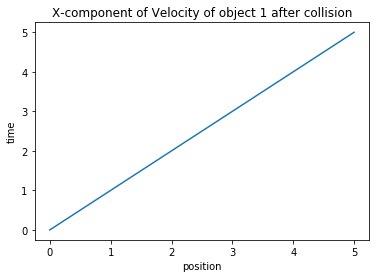

Momentum
Momentum
Setup
Loading useful libraries, and defining constants.
import numpy as np
from matplotlib import pyplot as plt
V1Bx=3 # X-component of Velocity of object 1 before collision
V1By=4 # Y-component of Velocity of object 1 before collision
V2Bx=1 # X-component of Velocity of object 2 before collision
V2By=0 # Y-component of Velocity of object 2 before collision
Before collision
V1B = np.sqrt(V1Bx**2 + V1By**2) # Velocity of object 1 before collision
QB = np.arctan(V1By/V1Bx) # angle of motion of object 1 before collision
V2B = np.sqrt(V2Bx**2 + V2By**2) # Velocity of object 2 before collision
QB = np.arctan(V2By/V2Bx) # angle of motion of object 2 before collision
# TOTAL MOMENTUM BEFORE COLLISION FOR X-COMPONENT
VTBx = V1Bx + V2Bx
# TOTAL MOMENTUM BEFORE COLLISION FOR Y-COMPONENT
VTBy = V1By + V2By
After collision
#Final Velocity of Object 1
V1Ax = 1 # X-component of Velocity of object 1 after collision
V1Ay = 1 # Y-component of Velocity of object 1 after collision
# Final Velocity of Object 2
V2Ax = 2 # X-component of Velocity of object 2 after collision
V2Ay = 2 # Y-component of Velocity of object 2 after collision
Plotting
t=np.linspace(0,5,100)
#POSITION FUNCTION OF TIME FOR object 1 after collision
P1Ax = V1Ax*t
P1Ay = V1Ay*t
#Position-time graph of X-component of Velocity of Object 1 After collision
fig1 = plt.figure()
plt.title ('X-component of Velocity of object 1 after collision')
plt.plot(P1Ax,t)
plt.xlabel('position')
plt.ylabel('time')
#fig1.savefig('graph.jpg')
Text(0, 0.5, 'time')

Download this page as a Jupyter notebook or as a standalone Python script.